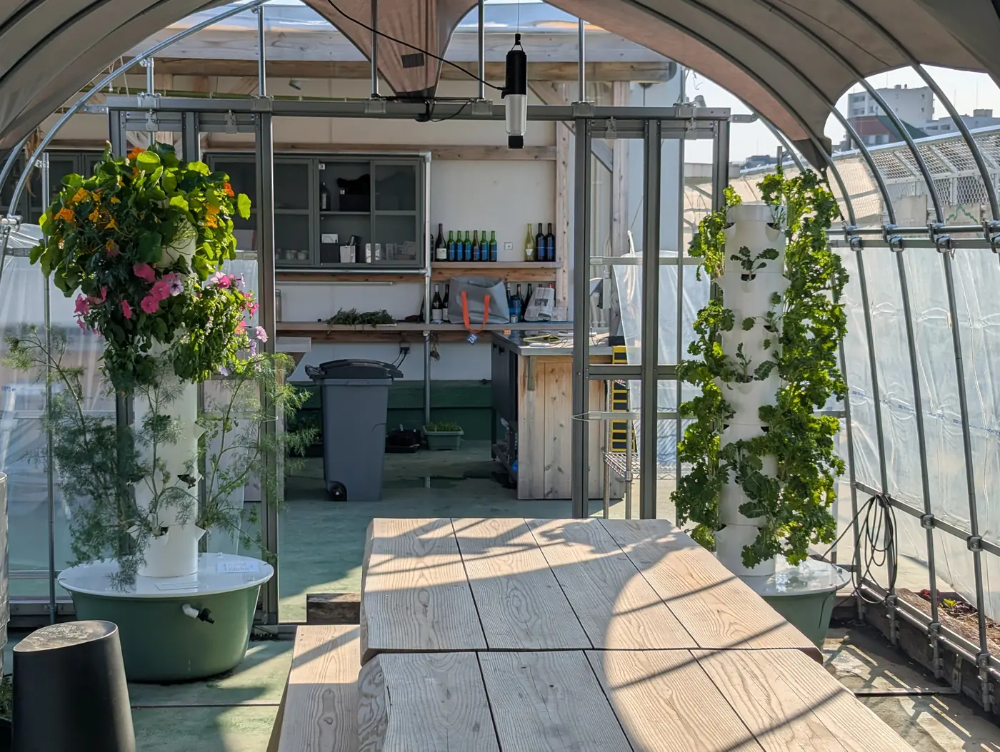

Grow food, knowledge, and connection in shared spaces.
Share farms, workshops, and neighborhood programs.

Overview
Community centers, sharehouses, neighborhood hubs, and cultural spaces are natural homes for a shared urban farm. A tower farm in a communal space brings people together around food — growing it, learning about it, and sharing it. We install systems tailored to your space and community, and offer optional programming to keep engagement high: workshops, harvest events, cooking sessions, and more.
Possible formats
A share-farm model where community members tend towers collectively. Regular Greentopia-led workshops open to the neighborhood. Seasonal growing programs tied to local events or calendars. Installations in shared kitchens, rooftops, courtyards, or indoor common areas.
Case example
We are currently developing community-farm partnerships at shared spaces in Tokyo. Contact us to discuss a pilot for your community.